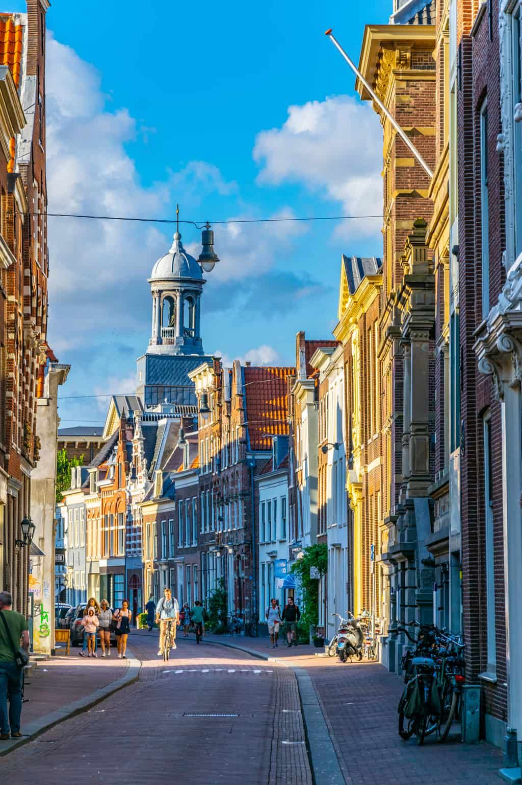
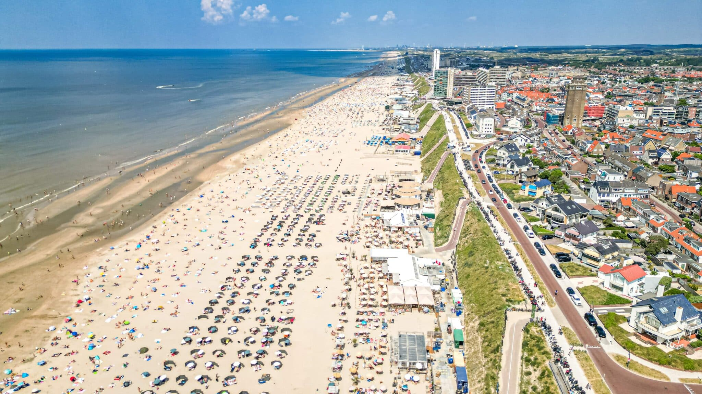

Haarlem
The wedding location is only 5 km from Haarlem city centre. Haarlem is a culturally rich, historic city with typical Dutch architecture. It can be reached from Amsterdam Airport Schiphol in 25 minutes by train.

Zandvoort
Travel 5 km in the other direction from the wedding location and you will find the coastal town of Zandvoort. It may not be known for historic architecture like Haarlem, but it is directly on the beach. Zandvoort is also famous for its Formula 1 circuit.